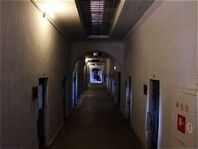

图片待替换assets/imported/doc-23.png

近代 · 遗迹旅顺日俄监狱旧址
旅顺口区 · 向阳街139号
一座占地宏大的殖民监狱，曾禁锢无数爱国志士，是东北近代屈辱与抗争的鲜活教材。
史实1902年沙俄始建，1904年因日俄战争停工；1907年日本扩建并使用至1945年。围墙内占地2.6万㎡，牢房275间，可同时关押2000余人，另有刑讯室、绞刑室和15座工场。
故事建筑群呈"大"字形放射布局，看守站在中心即可监视所有牢房。绞刑室分两层，上层行刑、下层尸体直接落入木桶。朝鲜义士安重根刺杀伊藤博文后曾被囚于此。最后一名亲历者、共产党员黄铁城于2004年过世。
今天全国重点文物保护单位、爱国主义教育基地。走进那间仅2.4㎡的黑牢，想象没有光的日子——这是任何书本都给不了的体感。
🎫 研学任务：找到"大"字形牢房的中心观察点